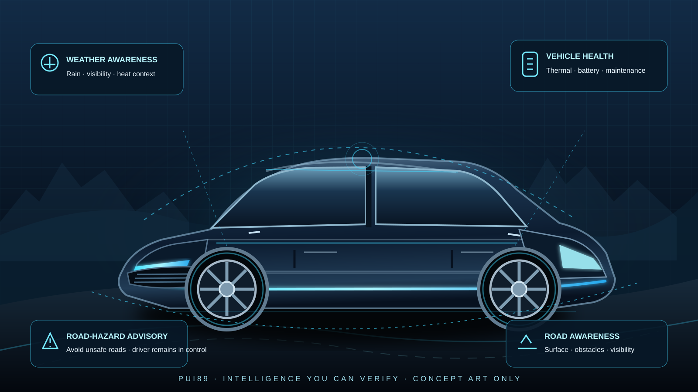
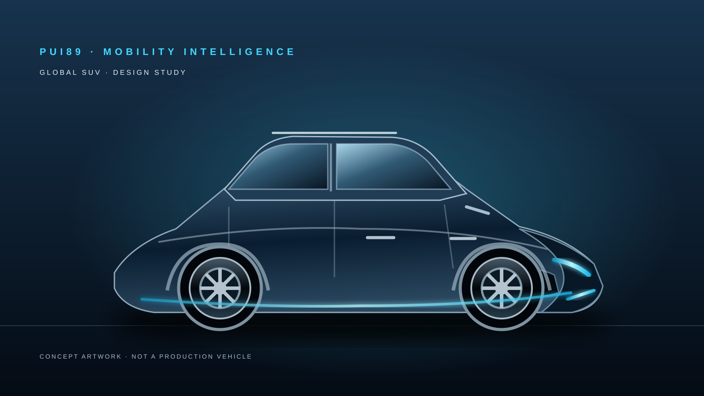

Easy to drive
- Intuitive controls, clear visibility and comfortable driver ergonomics.
- Predictable handling and low-effort parking/manoeuvring.
- Driver information that is clear, timely and non-distracting.
A medium-size global SUV concept with HEV-first research and powertrain-neutral PUI89 AI. Road-risk awareness is advisory only and does not control the vehicle.
Open GitHub repository ↗Easy to drive. Smooth to ride. Luxurious to experience. Excellent performance.
Commercial ambition: earn customer preference, pursue best-seller potential in the intended segment and achieve positive unit economics. These are objectives, not sales or profit guarantees. Validate customer demand, willingness to pay, manufacturing cost, service economics and margins before production decisions.
Evidence status: design objectives only. No completed vehicle, validated driving performance, luxury-quality result, customer satisfaction, profitability, regulatory approval or mass-production authorization is claimed.

The main hero image above presents Version 1 · Core Exterior Study. This gallery shows Version 2 · Flagship Styling Study as a distinct alternative. Both are design concepts, not frozen production specifications.

An alternative premium styling direction for comparison with the Core Exterior Study shown in the hero image; it is not a finalised production design.
The page now presents two distinct visual versions without repeating the Core Exterior image in the gallery. No physical vehicle prototype or engineering validation is represented.
PUI89 AI Global SUV is a distinct medium-size, five-door global-market SUV design and vehicle-intelligence programme—not a renamed generic AI car. The exterior direction is an upright SUV body with a tall passenger cabin, rear cargo compartment, practical ride-height study, pronounced wheel-arch cladding and a premium Deep Navy / Electric Cyan / Titanium Silver identity.
Specification status: the vehicle class, five-door body direction, design language and HEV-first evaluation order are project design intentions. All physical dimensions, capacities, performance, installed hardware, production configuration and compliance remain open decisions or unvalidated. Concept artwork is not a vehicle prototype.
Premium to own. Practical to maintain. Repairable by design. PUI89 AI Global SUV is intended to combine a first-class five-seat experience with straightforward inspection, diagnostics, repair and parts support across international markets.
Engineering status: proposed requirements only. No selected supplier, approved production BOM, confirmed service network, measured repair time or validated maintenance interval is claimed. See the Global Serviceability & Parts Strategy v1.0.
Preferred research direction: 2.0L petrol Full HEV with rear-wheel drive. The displacement and layout are preliminary research targets, not a selected production powertrain.
Study a high-voltage traction battery for the electric motor and electric A/C compressor, plus a separate 12V auxiliary system. The engine may stop while parked when operating conditions permit and restart when energy or thermal demand requires.
Develop an evidence-led software foundation that can interpret documented observations, track uncertainty, assess hazards and present explainable advisories for human review.
Observation → WorldState → Hazard Analysis → Safety Gate → Human-facing Advisory → Evidence Record
Concept-definition stage with early software-only engineering foundations and research documentation. No physical SUV prototype, selected vehicle platform or powertrain, validated perception model, vehicle integration, road testing or certified safety system. SUV-specific Shared AI Core conformance remains pending; the predecessor AI Car 10/10 report is historical and must not be counted as an SUV result.
Early-stage software foundationA premium medium-size, five-door global SUV concept: confident proportions, practical everyday access and a composed road presence. The visual identity combines Deep Navy, restrained Electric Cyan and Titanium Silver. This is a design direction—not a frozen production specification.
The SUV concept is human-driver-first. PUI89 AI is intended to interpret authorised observations and present bounded, explainable information—not control the vehicle.
Explore advisory detection of road hazards, unusual conditions and poor visibility.
Present weather and route-risk information with source quality, timestamps and uncertainty.
Prefer rerouting and safe stopping. Unknown depth, current or passability means unknown—not safe to enter. No wading capability is claimed.
Future read-only health insights may summarise supported signals. No ECU, CAN, battery-management or propulsion command path is in scope.
Explain why an advisory appeared, what evidence supports it, what is missing and when a human should verify it.
Potentially present incident context to help a person contact assistance; no automatic dispatch is claimed.
Progress advances only when matching artefacts and tests exist. This is a proposed sequence, not a claim that future stages are complete.
Current public status: early software foundation and concept research. Physical vehicle engineering and validation remain future work.
Scan to open this exact English project page. The QR code is a static image hosted by PUI89.
A driver- and passenger-facing assistant that separates conversational convenience from safety-critical vehicle functions.
Answer cabin questions, explain vehicle information and support navigation or trip planning when connected data is available. Keep responses concise and avoid distracting dialogue while driving.
Combine road-scene evidence, weather, route context and vehicle-health signals to prioritise advisory warnings. Show confidence and degrade safely when sensors disagree or fail.
Hands-free voice for low-distraction requests, glanceable display messages and distinct priority alerts. Passenger interaction must not obscure driver-critical information.
Safety & human oversight: Any cabin camera requires occupant-visible privacy controls and clear operating indicators. The AI is advisory only: it must not steer, accelerate or brake, and must not replace the driver's judgement.
Status: Proposed product capability scope for design and development. This does not claim that models or functions are installed, implemented or validated.
Project-specific capabilities built on the PUI89 Shared AI Core.
Night/rain robustness, driver monitoring, low-power edge inference, sensor fusion and controlled closed-course evaluation. Human driver remains responsible; no autonomous steering, throttle or braking is implied.
Evidence status: Proposed scope, not a claim that every capability is implemented. Code, software tests, dataset evaluation and field validation must be reported separately.
PUI89 / AI TECHNICAL VISUAL

Maturity: Implemented — early software-only safety/contract foundation. Evidence status: PARTIAL.
Recent progress: Multilingual manual and remote-companion specification merged; offline-first requirements specify that primary driver controls and required vehicle safety systems remain independent of apps, internet and AI assistance. AI remains advisory and the driver retains control.
Not established: a physical vehicle prototype, integrated sensors, validated road-scene accuracy, road testing, vehicle certification or autonomous driving.
Next evidence gate: complete driver-use-case and hazard analysis, define permitted read-only vehicle interfaces and provenance, then run reproducible advisory-only scenario evaluation with false-alert, missed-hazard and unknown-state analysis.
Last reviewed: 20 November 2026 · Review period: November 2026
Coloured markers identify improvement dimensions, not certification or completed implementation.
Status: ● Framework guidance published · ● Project evidence review pending · ● Unverified / not assessed
Recommendations only; maturity changes require repository evidence, repeatable tests or controlled validation. Software tests do not establish physical product safety or certification.
PUI89 ENGINEERING STATUS
Development stage: Formal stage assessment pending. No maturity score or completion percentage is claimed.
These indicators are intentionally unscored until a dated review links each assessment to verifiable repository evidence, reproducible tests and applicable validation. A coloured marker identifies the dimension; it does not represent a score.
PUI89 EVIDENCE STANDARD
PUI89 AI Global SUV — Not yet scored
Completed evidence-backed strength reviews: 0. This is a review-record count, not a statement that no development or testing has occurred.
Assessment weights: Technical capability 25 · Testing and evidence 25 · Safety and reliability 20 · Engineering maturity 15 · Documentation and reproducibility 10 · Real-world validation 5.
Scores will appear only after a dated review records its scope, version, evidence, findings, limitations and next actions. Concepts, planned features and unrun tests receive no credit. Simulation results do not prove physical-world performance.
The intended AI assistance includes advisory alerts for heavy rain, visible road-water hazards, trusted flood reports and route risk. If water depth, current, road surface or route safety is unknown, report unknown — do not enter. This is an advisory design requirement, not a claim that the vehicle can safely drive through floodwater. The human driver retains full control; no autonomous steering, throttle or braking is claimed.
PUI89 PRODUCT UPDATE · 20 NOV 2026
A medium-size, five-door SUV concept with a software-first, driver-centred AI architecture. HEV is the preferred first powertrain research direction; no vehicle platform or drivetrain is selected.
Computer vision, object detection/tracking, GNSS, IMU, read-only OBD-II/vehicle data, edge AI, sensor fusion, map/weather context, risk estimation and driver-alert interfaces.
Families, everyday drivers, fleet operators and mobility partners seeking additional road-risk awareness and vehicle-context support.
Safety boundary: advisory only. No autonomous steering, throttle, braking or propulsion. If water depth, current, road condition or passability is unknown, advise “unknown — do not enter.” No flood-wading, crash, fire, production or global regulatory validation is claimed.
ภาษาไทย: แนวคิด SUV ขนาดกลาง 5 ประตู เน้น AI ช่วยผู้ขับขี่รับรู้ความเสี่ยงบนถนน สภาพอากาศ น้ำบนถนนและข้อมูลน้ำท่วมที่ตรวจสอบได้ รวมถึงข้อมูลสภาพรถจากช่องทางอ่านอย่างเดียว เทคโนโลยีได้แก่ Computer Vision, GNSS/IMU, Edge AI, Sensor Fusion และข้อมูลแผนที่/สภาพอากาศ โดยผู้ขับขี่ยังคงควบคุมพวงมาลัย คันเร่ง และเบรกเอง หากไม่ทราบความลึกหรือความปลอดภัยของเส้นทางให้แจ้งว่าไม่ทราบ—ห้ามเข้า
Perceive → Understand → Predict → Decide → Act. PUI89 AI Global SUV is a driver-centred mobility-intelligence concept with an HEV-first, powertrain-neutral direction.
Advisory-only. No AI autonomous steering, throttle, braking or propulsion commands. Driver remains in control; sensor health, uncertainty, freshness and evidence are retained.
Evidence boundary: no vehicle integration, road testing, flood-wading depth, ADAS certification, autonomous control or validated predictive maintenance is claimed.
PUI89 · LOCAL-FIRST USER EXPERIENCE
Essential warnings and system status must appear directly on the product's integrated display or its appropriate local operator station. A smartphone app, account, pairing, internet connection or remote service must never be required for critical alerts, safe stopping or essential recovery.
Information · Advisory · Warning · Emergency
Each alert should state what happened, affected area or subsystem, event time and source, confidence or uncertainty, recommended safe action, and whether human acknowledgement is required. Missing, stale or conflicting evidence must never be presented as confirmed or safe.
Road hazards and collision-risk advisories; weather and verified flood-risk context; unknown water depth, current or passability; supported read-only vehicle-health, battery or thermal anomalies; stale, missing or conflicting sensor/vehicle data.
Warnings must be glanceable and non-distracting. If flood depth, current or passability is unknown, show “UNKNOWN — DO NOT ENTER.” The driver retains full steering, throttle and braking control; AI is advisory only.
Keep active alerts and timestamped history locally, including acknowledgement and cleared state. Essential alerts should continue during internet/cloud loss where technically feasible; optional mobile notifications only mirror local alerts. Report sensor obstruction, stale data, communication loss and internal faults. Define a safe response and never automatically resume hazardous operation.
Design requirement only — not evidence that a display, alert system or hardware has been installed, tested or certified. Product conformance remains Unknown / Not Tested until traceable evidence exists.
PUI89 · INCIDENT EVIDENCE & HISTORY
When PUI89 AI Global SUV detects an abnormal condition, create a local incident record. Product-specific evidence may include: Road/vehicle advisories, collision-risk observations, weather and verified flood-context events, unknown water depth, sensor/data-quality faults and supported read-only vehicle-health anomalies. Image review only while safely parked; AI never takes over steering, throttle or braking.
Show a concise warning and event summary on the product display, with audible tones and spoken alerts appropriate to severity. Users can press to read full details, inspect saved evidence images and replay the voice alert from the product display or local console. If no image was actually captured, say so; never generate an image and present it as evidence.
Provide READ / VIEW HISTORY with year → month → day navigation. Users can open summaries, read full alerts, view saved images and browse earlier/later incidents. Every image shows event date, time and incident ID, plus clear labels for incomplete or uncertain data. Vehicle image review is available only when safely parked.
History must be reviewable without a phone, app or internet. Warn when storage is nearing capacity; never automatically delete or overwrite important evidence. Export and recovery remain user-controlled.
Design requirement only. Image capture, date-based recall, voice replay and evidence preservation remain Unknown / Not Tested until verified.
The vehicle must remain controllable without the companion app. Safety must not depend on connectivity. Smartphone, QR code, Wi-Fi, internet and cloud services are optional and must not be prerequisites for primary rider/driver controls or required vehicle safety systems.
These are proposed design requirements, not proof of a built, road-legal, tested or validated vehicle. See PUI89 Offline Independence & Connectivity Resilience Standard v1.0.
In-box printed manual requirement: the complete printed User Manual and printed Quick Start & Safety Guide must be supplied inside the product box. Both must be readable immediately without a smartphone, QR scan, account, app, Wi-Fi or internet. QR and URL are supplementary only.
First-Class Luxury. Global Serviceability. Lifetime Reliability. These are lifecycle engineering requirements—not claims of current vehicle capability.
Clearly labelled, safe access to routine service points and diagnostics. Verify with technician task studies.
Replaceable modules and repairable subassemblies where safety and lifecycle value permit; verify removal, installation and post-repair checks.
Evaluate qualified service and parts ecosystems in Thailand/ASEAN, Japan, South Korea, Europe and the US. These are target regions, not confirmed coverage.
Record exact manufacturer, manufacturer part number, manufacturing site, origin, sub-tier provenance, revision and validated alternatives. Unknown provenance is not approved.
Plan workshop manuals, wiring/diagnostic information, technician training, warranty and recall processes, software support and component end-of-life handling.
Primary driving controls and required safety functions must not depend on a phone, app, internet or cloud. Essential information needs an offline path.
PUI89 AI may explain authorised read-only diagnostic evidence and recommend inspection with uncertainty. It must not clear safety faults, write to control ECUs or replace qualified technicians.
Prove durability, corrosion, thermal, vibration, maintainability and repair performance through repeatable tests and configuration-controlled evidence—not unsupported lifetime claims.
Measurement rule: each priority requires an owner, test conditions, measurable acceptance criteria and retained evidence. No supplier, parts availability, repair time, service interval or service-life claim is established until verified.
The SUV concept has proposed requirements for automotive-grade components/connectors, road spray and dust, temperature cycling, vibration, UV, salt/corrosion, sensor-window contamination, vehicle electrical transients, EMC and secure mounting. Applicable automotive standards must be assessed by subsystem; an industrial IP rating must not be transferred to the complete vehicle. AI remains advisory and does not control steering, throttle or braking. No vehicle integration, road testing or certification is claimed.
Status: Proposed / Not implemented / Not tested. Candidate sensor locations: Vehicle IMU or qualified automotive accelerometer. Intended analysis: Road/body vibration; validated wheel/tyre/drivetrain indicators only.
| Capability layer | Current status |
|---|---|
| Hardware Sensor | Not installed / Not verified |
| Embedded Acquisition & Signal Processing | Not implemented / Not tested |
| AI / Analytics | Not implemented / No validated model |
| Live Telemetry | No live data |
| Overall Requirement | Hardware + AI/Software required |
This is a documentation preview, not a live device status. Once implemented, the console must show RMS/peak with units, FFT/band energy only when actually measured, timestamp, sensor health, confidence and test evidence. Never fabricate telemetry.
Status: Proposed / Not implemented / Not tested. No production vehicle display, selected automotive hardware, vehicle-bus integration or validated local console is established.
The intended driver-facing console presents vehicle state, approved AI/ADAS availability, warnings, read-only diagnostics, battery/powertrain information where supported and maintenance status. It must be glance-readable and minimise distraction.
Use a vehicle-approved startup/ready/operating/shutdown sequence, not a generic robot shutdown command. Shared AI Core Local Console Architecture v1.0 (Draft)
Proposed — not implemented or field-validated. Local AI may provide verified vehicle information and advisory warnings offline where supported by approved interfaces. Offline status does not authorize autonomous driving. The driver retains full control of steering, throttle and braking.